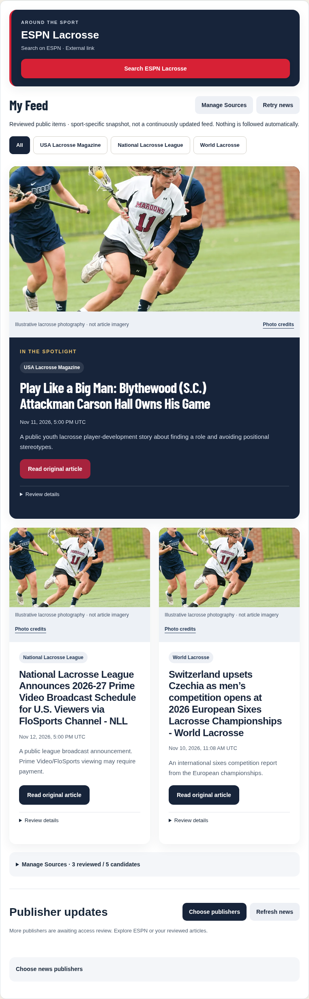

Actual Arena Pathway / Soccer Center comparison
November 16, 2026 · AP qualification branch codex/ap-final-qualification-20261116 · source baseline f310946…
Soccer Center current imported GitHub source 11de067414e63c5d3e3e221dfc14cc026dfbd8d0; fourteen source/routing blobs verified. Screens here are fresh rendered AP sessions and the actual current public SC demo. They are not reconstructed fixtures. Different fictional data means this is a hierarchy/interaction comparison, not a content-equality test.
Boundary: protected SC parent routes require an authorized session. Empty reference slots explicitly mean unavailable evidence; a login page, public homepage or old fixture is not substituted for that target screen.
Acceptance report · Source hashes · Live-render log · Public directory / access boundary
Same product family?
The observed AP profile, owner recruiting card, controls and information groups are recognizably related to SC while retaining AP's collegiate typography and brand. Complete authenticated visual parity is not established. The remaining concrete differences are a combined program/team onboarding choice, grouped composition rather than seven SC substeps, larger AP cards, and owner-only rather than secure external sharing. No core demonstrated AP save/return journey depends on those external systems. The founder still owns final visual acceptance; this evidence does not substitute for it.
Club and team finder
PARTIAL — current anonymous SC demo chooser, not authenticated ClubSelector
- Information hierarchy
- AP uses the reviewed multisport search plus a scrollable club/program choice; SC demo begins with five dependent club/program/age/team/player selectors. Its actual ClubSelector source supports directory search/manual fallback.
- Primary decisions
- One immediate club choice in AP; five demo identity choices in SC. SC authenticated wizard has six steps; the demo selectors are not that wizard.
- Visual density
- AP results disclose unknown participation facts. SC demo has a denser synthetic roster.
- Navigation
- AP selection finishes at the existing athlete; SC demo selects an already fictional roster player.
- Completion and persistence
- AP saved club ownership/reload passes. No authenticated SC save was attempted.
- Missing essentials / limitations
- Authenticated ClubSelector screenshot and permitted club logos unavailable. Source: ClubSelector.tsx. No essential internal AP selection blocker observed.
Athlete onboarding
BLOCKED — no authorized SC creation session
Arena Pathway · current rendered iPadSoccer Center · actual current public demo where availableTarget screen unavailableNo authorized production session.
Source-verified behavior is described below.
No fixture or stock mockup is used.
- Information hierarchy
- Actual SC source steps are club/program/season/agegroup/team/details, then optional scheduling. AP combines program/team and uses its sixth guided step for calendar setup.
- Primary decisions
- Six primary guided AP steps; six SC creation steps plus optional calendar handoff, source-verified.
- Visual density
- Both use explicit selection groups; AP permits incomplete reviewed program data and a manual fallback.
- Navigation
- AP also keeps the approved basics shortcut; SC source has its guided back/next flow.
- Completion and persistence
- AP all-four-sport guided onboarding is browser verified. SC production creation was not performed.
- Missing essentials / limitations
- Exact authenticated visual parity remains unverified. The different program/team grouping is deliberate and retained; aligning it is a separate user decision, not a release-blocking data defect.
Athlete profile
OBSERVED — current SC anonymous demo / AP fresh fictional athlete
- Information hierarchy
- Both group identity, sport/position, club/team and records. AP retains its larger collegiate cover/avatar and two-column overview; SC demo uses narrower stacked about/position/club panels.
- Primary decisions
- Five AP tactical tabs plus separate resources; SC demo has six tabs including Tryouts. Neither requires Recruiting to use Profile.
- Visual density
- AP uses larger touch-friendly headings and more empty-state cards; SC demo is denser with prepopulated fictional details.
- Navigation
- AP four pillars remain global; athlete tabs stay local. SC portal uses its own portal shell.
- Completion and persistence
- AP profile IDs and edits persist through family and recruiting. SC demo selection persists locally; production persistence is not qualified here.
- Missing essentials / limitations
- No authenticated parent account or shared cloud persistence in AP. Smaller profile empty-state whitespace is a discretionary presentation difference, not an unfinished save.
Calendar and scheduling
OBSERVED viewer / source-verified editor
- Information hierarchy
- Both prioritize scheduled activity and actions. AP adds its existing category and day/week/month/list controls; SC demo shows seeded practice/match commitments.
- Primary decisions
- AP chooses existing view or one event action; recurring entry adds selected weekdays and one repeat-through date. SC source supports calendar connection/manual entry.
- Visual density
- AP owner controls are larger; details/forms are secondary. Source provenance stays available.
- Navigation
- Athlete schedule links to the same local-family calendar, not a second store.
- Completion and persistence
- AP five exact Mon/Wed occurrences, stable refs, edit/reload, exception handling and parent continuity verified in both engines. No SC production schedule was edited.
- Missing essentials / limitations
- Live subscriptions remain unconnected; ICS export/reviewed import work. A screenshot of SC authenticated schedule editing is unavailable.
College search
OBSERVED UI — SC demo data explicitly synthetic
- Information hierarchy
- Both expose institution search, region/state, program gender/division and saved research categories. AP uses verified sport-specific program records.
- Primary decisions
- Research is Stage 1; users may filter or save without building a profile. SC demo offers six research categories; AP preserves those categories in research.
- Visual density
- SC uses compact badges; AP uses larger readable program cards and expandable coaching evidence.
- Navigation
- AP hides research-only tabs during building, returning to Stage 1 restores them.
- Completion and persistence
- Saved reviewed school IDs persist with the existing athlete. SC demo selection uses fictional Mountain College; that is not a verified coaching dataset.
- Missing essentials / limitations
- AP has 43 reviewed programs and no verified coaching contacts. Official links and honest unknowns remain; content acquisition is separate.
Recruiting information entry
OBSERVED demo builder / source verified ProfileBuilder
- Information hierarchy
- Both have dedicated school, graduation, About Me, goals and academic fields before sharing choices. AP writes the original athlete, not a duplicate identity.
- Primary decisions
- AP Save athlete information, then Choose information for my profile; SC Save profile and choose sharing transitions to field selection.
- Visual density
- AP shows saved information and a collapsible editor; SC labels and control density are more compact.
- Navigation
- New AP continue action deliberately moves to the existing grouped choices.
- Completion and persistence
- Save/reload, unedited legacy fields, four sport adapters, revision and rebuild all tested. SC demo builder is fictional, no authenticated write.
- Missing essentials / limitations
- AP field naming is multisport; school data remains family-reported. No essential owner-entry gap observed.
Parent-controlled composition
OBSERVED anonymous demo composition; authenticated parity not claimed
- Information hierarchy
- Both group selectable fields and existing records/media/events. AP keeps all private by default; SC demo visually recommends and preselects several fields.
- Primary decisions
- AP has up to 17 core fields plus per-item choices inside Stage 2. SC has seven internal steps: fields, matches, media, events, settings, preview, created.
- Visual density
- AP composition is a longer grouped page with a sticky build action; SC advances through smaller substeps.
- Navigation
- AP native checkbox updates keep the viewport/control; intentional continue/build actions move to their relevant headings.
- Completion and persistence
- Both are owner-controlled demos. AP explicitly measures selection scroll deltas, selected-only video/records and approval/revocation after reload.
- Missing essentials / limitations
- SC external share/settings flow is not copied into AP without infrastructure. Exact substep count differs; the smallest possible future alignment is progressive disclosure of current groups, not another data system.
Finished coach-facing profile
OBSERVED actual owner cards — different fictional inputs/selections
- Information hierarchy
- Both lead with athlete identity, then introduction, academics and selected appearances. AP selected card also shows competition totals, honours and a playable selected upload.
- Primary decisions
- AP Build, review, optional parent approval/revoke. SC demo exposes three style choices plus its synthetic request form.
- Visual density
- AP larger collegiate headline and performance tiles; SC compact classic card and blue date blocks. Both have coherent sections and readable content.
- Navigation
- AP adds a direct View saved recruiting profile return action; saved state is projected from existing fields/IDs.
- Completion and persistence
- AP build→other pillar→return→reload→edit→rebuild→approve→revoke passes in all four sports and both engines. SC public demo card rendered; no create-share or request submission used.
- Missing essentials / limitations
- AP does not provide an external coach URL/request inbox or styles not already approved. This is a local preview, not externally secured sharing. Absence caused by different sample selections is not treated as an SC defect.
Media/gallery
OBSERVED gallery; source-verified event linkage
- Information hierarchy
- Both keep family-uploaded photos/video within athlete Media, separate from publishers. AP gallery appears before the upload editor.
- Primary decisions
- AP Add Media, optionally choose one eligible competition. Existing gallery offers edit/delete; recruiting separately selects a highlight.
- Visual density
- AP uses wider gallery cards and native video controls; SC demo uses fictional gallery content.
- Navigation
- The chosen athlete and competition reference stay the same across gallery/recruiting.
- Completion and persistence
- AP game video plays in the finished card; unselected private image stays excluded. Historical practice media and another athlete remain intact.
- Missing essentials / limitations
- SC production upload and authorization are unverified. AP uploads are browser-local; no cloud backup or public exposure.
Editorial feeds
BLOCKED — authenticated SC feed render unavailable
Arena Pathway · current rendered iPad
Soccer Center · actual current public demo where availableTarget screen unavailableNo authorized production session.
Source-verified behavior is described below.
No fixture or stock mockup is used.
- Information hierarchy
- Actual UnifiedFeedWall source has source filters, loading/retry and image/headline/publisher/time cards. AP has the same editorial hierarchy, plus a featured story and explicit snapshot/illustration labels.
- Primary decisions
- AP source chips and compact Manage Sources; choices remain opt-in. No new publisher automatically activates.
- Visual density
- Photo and type fallback no longer stack as duplicate covers. Public sport news intentionally uses typography when article image rights are absent.
- Navigation
- Original publisher opens separately and AP remains available; source preference persists.
- Completion and persistence
- Four sports, photo 404 fallback, source filtering, rejected unapproved imagery and publisher returns tested. Actual SC portal feed comparison still needs an authorized session.
- Missing essentials / limitations
- No licensed publisher imagery or active live feed is inferred. Do not equate source inspection or the supplied older screenshot with an authenticated current render.
Reproduced before / corrected after
Existing card data already persisted. The correction makes build and return explicit. Feed cover correction is presentation only.
Return to recruiting
News: duplicate cover removed
Before After
After